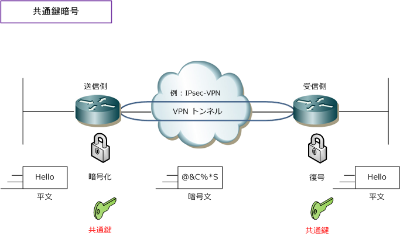
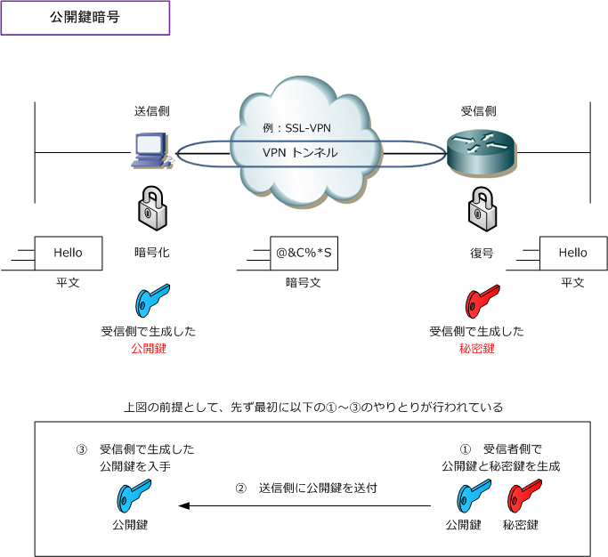
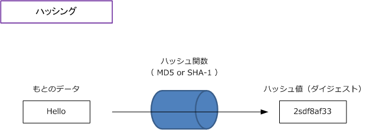
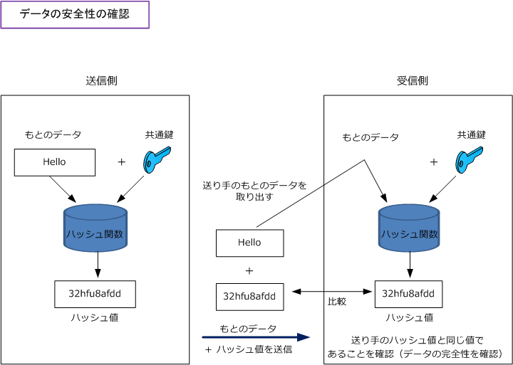

VPN - Encryption System 2
共通鍵暗号（対称暗号）
暗号化と復号に同じ鍵を使用する暗号化方式です。共通鍵暗号は、対称暗号、秘密鍵暗号とも言われ ています。また、共通鍵暗号で使用する鍵は共通鍵または秘密鍵と言われています。代表的な共通鍵 暗号には、RC4、DES、3DES、AESなどがあります。暗号強度が最も高いのは「AES」となります。

公開鍵暗号（ 非対称暗号 )
ペアとなる2つの鍵を使用する暗号化方式です。この暗号化方式では、暗号化で使用する鍵と復号で 使用する鍵はペアではありますが異なるものを使用します。暗号化に使用する鍵は公開鍵と呼ばれて 復号に使用する鍵は秘密鍵と呼ばれます。この公開鍵暗号で、もとのデータの暗号化をするためには、 データの送信者は受信者が公開している公開鍵を使用し暗号化します。一方、受信者は暗号化された データを受信者だけが持っている秘密鍵を使用して復号を行います。このため公開鍵を誰もが知って いても、暗号データを復号できるのは秘密鍵を持つ受信者だけなので暗号文を傍受されても解読不可。
共通鍵暗号では、事前に定義している「共有の鍵を安全な経路で相手に届ける」必要がありましたが 公開鍵暗号では、公開鍵が第三者に知られても解読不能のため、鍵の安全な輸送の必要もありません。 公開鍵暗号には、RSA、ElGamalがあります。CiscoルータがサポートしているのはRSAとなります。

Diffie-Hellman鍵交換
インターネットなどの安全でない通信路を経由して「共通鍵」を安全に送受信するための鍵交換方式。 Diffie-Hellman鍵交換のアルゴリズムは、データの暗号化ではなく、共通鍵暗号の「共通鍵」の交換の 際に使用されるアルゴリズムです。IPsecではIKEの標準的な鍵生成、配送方式として採用しています。 Diffie-Hellman鍵交換では、共通鍵そのものではなくて、乱数と共通鍵から生成した公開情報を送受信 します。この方式により共通鍵そのものが知られることなく、安全に鍵の送受信を行うことが可能です。
ハッシング
ハッシングとは、もとのデータからハッシュ関数で演算処理を行い、一定の長さの文字列を生成すること。 この一定の長さの文字列のことを「ダイジェスト（ハッシュ値）」と呼びます。これは暗号化の為ではなく データの完全性を保証するために使用されます。もとのデータが大きい場合も固定長のダイジェストを比較 するだけで済むことから高速にデータの完全性を証明できます。ハッシュ関数にはMD5、SHA-1があります。

認証
改ざん防止をより強化するために、HMAC（ Keyed-Hashing for Message Authentication Code ）という アルゴリズムがあります。これはデータの完全性を保証するMAC（Message Authentication Code）の1つ。
HMACのプロセスでは、送信側が「もとのデータ」と「共通鍵」を合成してその結果に対しハッシングして ハッシュ値を生成します。次に、送信側はもとのデータとハッシュ値の両方を１つのメッセージとして送信 します。受信側は、受信した「もとのデータ」と「自身の持つ共通鍵」を合成してハッシュ値を生成します。 その結果、送信側のハッシュ値と受信側のハッシュ値が一致すれば、受信データの完全性を確認できます。

HMACで使用できるハッシュアルゴリズムには、MD5とSHA-1などがあります。MD5を使用したものを HMAC-MD5、SHA-1を使用したものをHMAC-SHA-1と言います。暗号強度はHMAC-SHA-1の方が高い。